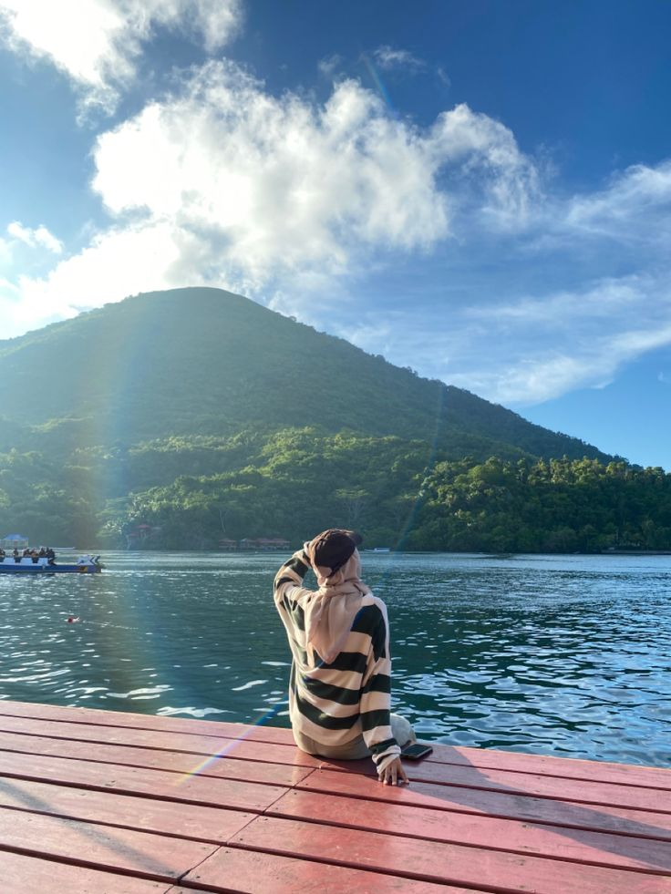
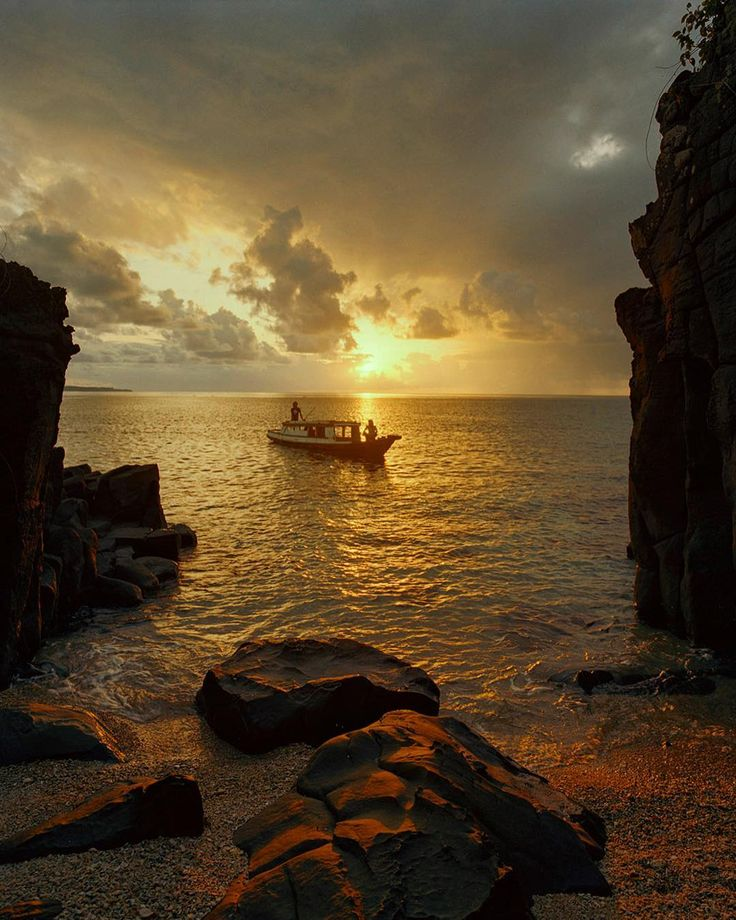
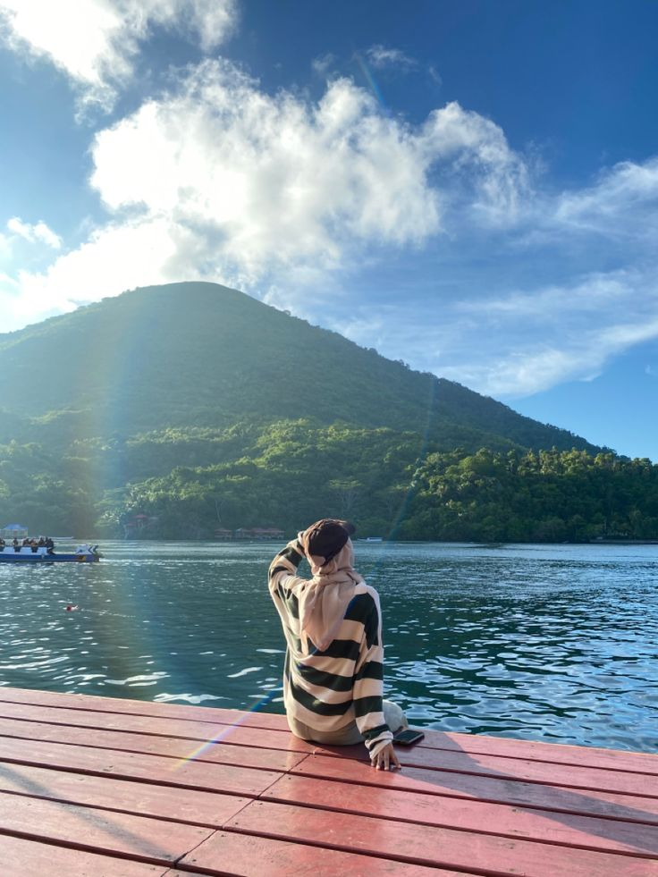
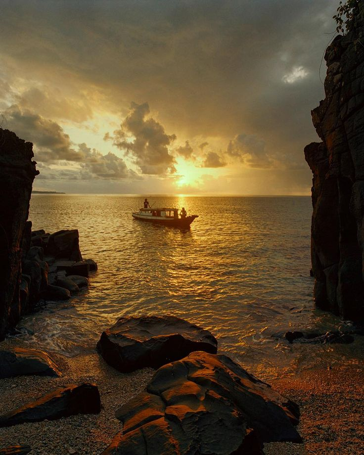
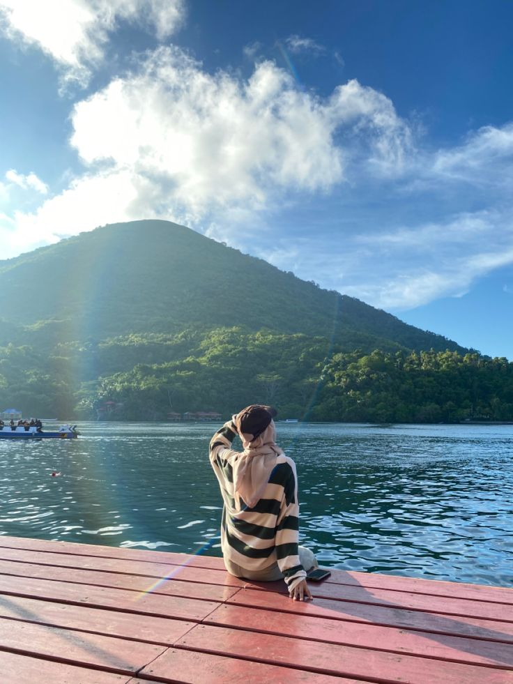
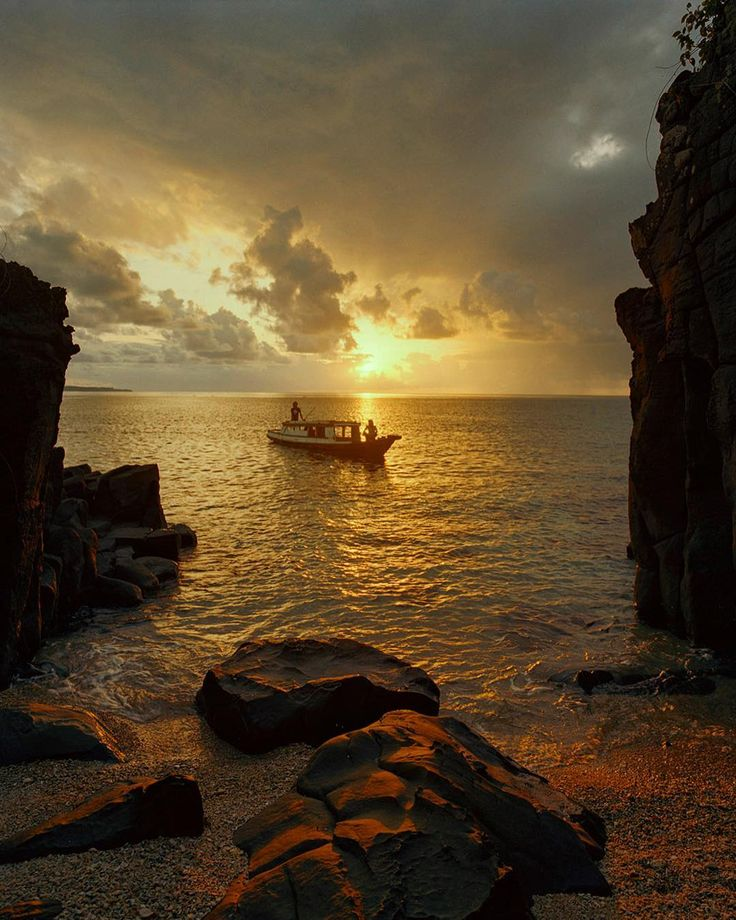

AKRASE OPEN TRIP TO BANDA NEIRA SUDAH TERPERCAYA SEJAK TAHUN 2000 DAN SERING MENGADAKAN OPEN TRIP


AKRASE OPEN TRIP TO BANDA NEIRA SUDAH TERPERCAYA SEJAK TAHUN 2000 DAN SERING MENGADAKAN OPEN TRIP
Start from 3 Jutaan

| NIM | : | 10123166 |
| NAMA | : | RAKA SETYA PRAMUDYA |
| KELAS | : | IF-4 |
2. Menikmati keindahan sunset di Benteng Hollandia dengan latar Belakang Gunung Api Banda
3. Snorkeling di pulau Kraka dan Lava Flow
4. Mengunjungi Pulau Hatta yang terkenal dengan keindahan taman bawah lautnya